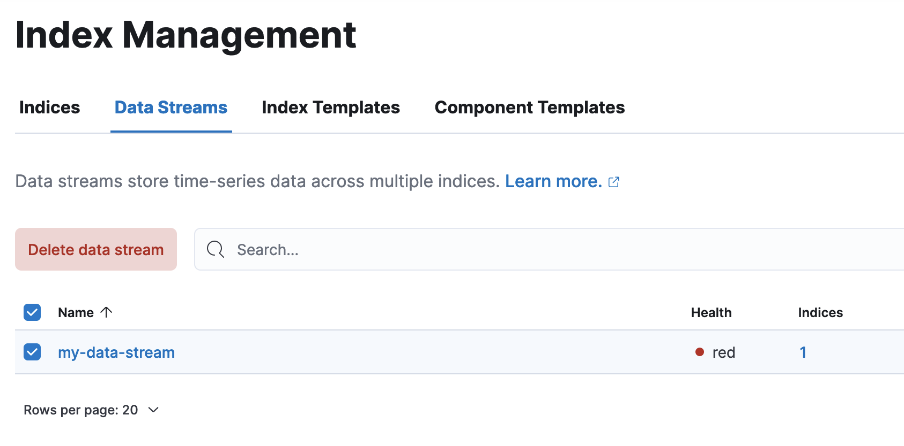
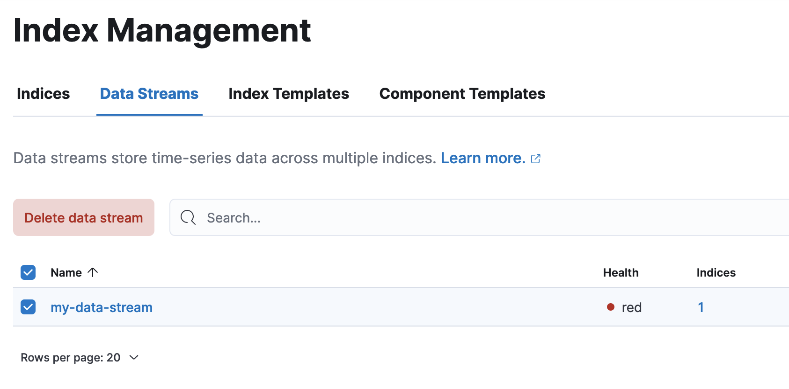
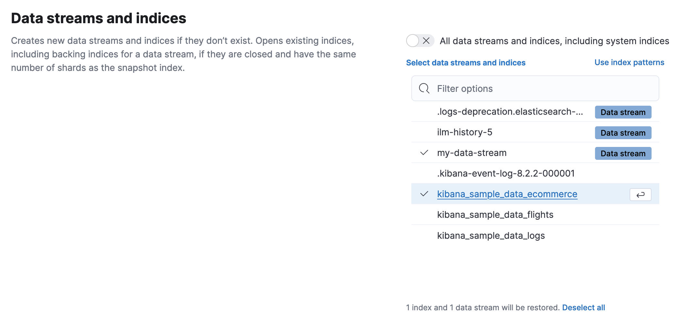
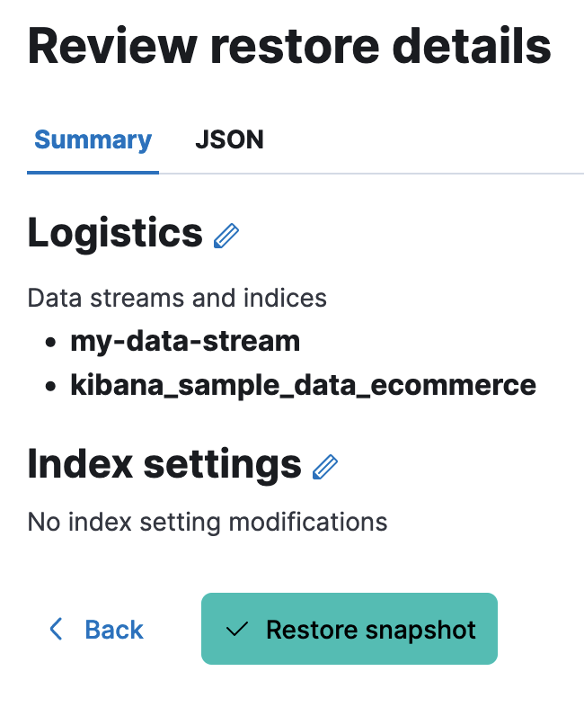
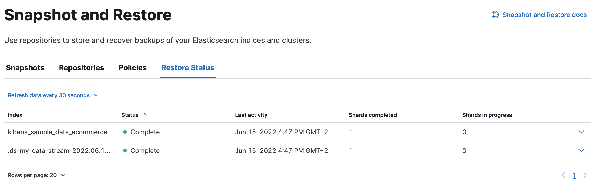

Restore from snapshotedit
Elasticsearch is using snapshots to store a copy of your data outside a cluster. You can restore a snapshot to recover indices and data streams for which there are no copies of the shards in the cluster. This can happen if the data (indices or data streams) was deleted or if the cluster membership changed and the current nodes in the system do not contain a copy of the data anymore.
Restoring the missing data requires you to have a backup of the affected indices and data streams that is up-to-date enough for your use case. Please do not proceed without confirming this.
Users from Elasticsearch Service, Elastic Cloud Enterprise or self-managed platform are able to use either the Kibana or API steps to restore a snapshot. Choose your preferred method to start.
In order to restore the indices and data streams that are missing data:
Use Kibana
If you are self-managed user, you can go straight to Kibana and start from step 3.
- Log in to the Elastic Cloud console.
-
On the Elasticsearch Service panel, click the name of your deployment.
If the name of your deployment is disabled your Kibana instances might be unhealthy, in which case please contact Elastic Support. If your deployment doesn’t include Kibana, all you need to do is enable it first.
- Open your deployment’s side navigation menu (placed under the Elastic logo in the upper left corner) and go to Stack Management > Index Management.
-
In this step we are going to find all the indices and data streams missing data. If you already have that information you could skip this. Go in the Indices tab, enable Include hidden indices toggle and find all the open indices that have an empty Health and empty Data stream, keep their names somewhere handy. Then, go to the Data Streams tab and keep the name of all the data streams whose Health is
red. 
 -
Use the left side menu to go to Snapshot and Restore, there you can verify that you have a snapshot to restore the target indices and data streams from. By clicking on every snapshot you can see the indices and data streams it contains. Not all resources need to be restored from the same snapshot. Do not proceed if there is no backup of the affected resources in a snapshot that is up-to-date enough for your use case, otherwise this will result in further data loss.

-
Go back to Index Management via the left side menu. In Indices enable Include hidden indices toggle and
delete all the indices that have noted, by selecting them and then using the Manage index button
choose delete index. In the Data Streams tab repeat the same by selecting the
reddata streams and then clicking Delete data steam. -
Use the left side menu to go back to Snapshot and Restore, click on the snapshot that you would like to restore from then click Restore. In the next page disable the toggle All data streams and indices, including system indices, deselect all and then choose the indices and data streams you would like to restore.
 -
Click Next twice to continue without changing anything else and finally click Restore Snapshot.
 -
When the process is complete, you will see in the Restore Status tab the result of your restore.
For more guidance on creating and restoring snapshots see this guide.
In order to restore the indices that are missing shards:
-
View the affected indices using the cat indices API.
GET _cat/indices?v&health=red&h=index,status,health
The response will look like this:
index status health .ds-my-data-stream-2022.06.17-000001 open red kibana_sample_data_flights open red
The
redhealth of the indices above indicates that these indices are missing primary shards, meaning they are missing data. -
In order to restore the data we need to find a snapshot that contains these two indices. To find such a snapshot use the get snapshot API.
GET _snapshot/my_repository/*?verbose=false
The response will look like this:
{ "snapshots" : [ { "snapshot" : "snapshot-20200617", "uuid" : "dZyPs1HyTwS-cnKdH08EPg", "repository" : "my_repository", "indices" : [ ".apm-agent-configuration", ".apm-custom-link", ".ds-ilm-history-5-2022.06.17-000001", ".ds-my-data-stream-2022.06.17-000001", ".geoip_databases", ".kibana-event-log-8.2.2-000001", ".kibana_8.2.2_001", ".kibana_task_manager_8.2.2_001", "kibana_sample_data_ecommerce", "kibana_sample_data_flights", "kibana_sample_data_logs" ], "data_streams" : [ ], "state" : "SUCCESS" } ], "total" : 1, "remaining" : 0 } -
The snapshot
snapshot-20200617contains the two indices we want to restore. You might have multiple snapshots from which you could restore the target indices. Choose the latest snapshot. -
Now that we found a snapshot, we will close the target indices via the use the close indices API.
POST kibana_sample_data_flights,.ds-my-data-stream-2022.06.17-000001/_close
You can confirm that they are closed with the the cat indices API.
GET _cat/indices?v&health=red&h=index,status,health
The response will look like this:
index status health .ds-my-data-stream-2022.06.17-000001 close red kibana_sample_data_flights close red
-
The indices are closed, now we can restore them from snapshots without causing any complications using the restore snapshot API:
-
Finally we can verify that the indices health is now
greenvia the cat indices API.GET _cat/indices?v&index=.ds-my-data-stream-2022.06.17-000001,kibana_sample_data_flightsh=index,status,health
The response will look like this:
index status health .ds-my-data-stream-2022.06.17-000001 open green kibana_sample_data_flights open green
As we can see above the indices are
greenand open. The issue is resolved.For more guidance on creating and restoring snapshots see this guide.